인형 진영 플레이어 시점의 게임 화면
플레이어는 퇴마사와 인형 중 하나의 진영을 선택합니다. 퇴마사는 술래잡기의 술래처럼 인형 플레이어를 모두 제거하는 것이 목표이고, 인형은 퇴마사를 피해 탈출 조건을 만족하고 탈출하는 것이 목표입니다.
1
확률 기반 랜덤 박스 시스템
개발 의도. 역전의 발판 혹은 승리를 굳힐 기회를 주어 플레이를 다채롭게 하기 위한 아이템 시스템입니다. 각 아이템의 등장 확률은 등장 빈도 값에 따라 무작위로 결정됩니다.
아이템 등장 빈도는 기본값 10인 정수 데이터이며 0 미만이 될 수 없습니다. 아이템 등장 확률 = 해당 아이템의 등장 빈도 / 모든 아이템의 등장 빈도 합
- RandomGenerator<T> — 무작위 리스트를 만들어 오브젝트를 뽑아주는 제네릭 클래스
- Item / ItemBox — 아이템을 생성/저장/제거하는 클래스, ExorcistItemBox / DollItemBox가 진영별로 상속
Class Diagram
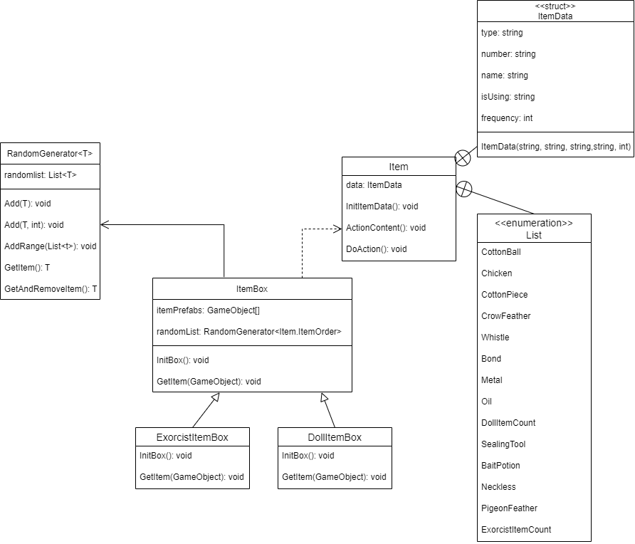
RandomGenerator.csC#
public class RandomGenerator<T>
{
List<T> randomlist = new List<T>();
public void Add(in T item)
{
randomlist.Add(item);
}
public void Add(in T item, int count)
{
for (var i = 0; i < count; ++i)
{
randomlist.Add(item);
}
}
public void AddRange(in List<T> items)
{
randomlist.AddRange(items);
}
public T GetItem()
{
int i = Random.Range(0, randomlist.Count);
return randomlist[i];
}
public T GetAndRemoveItem()
{
int i = Random.Range(0, randomlist.Count);
T item = randomlist[i];
randomlist.RemoveAt(i);
return item;
}
}예를 들어 100개의 아이템에서 25%의 확률로 하나의 아이템을 획득하게 하려면, 25개의 동일 아이템을 리스트에 넣어 확률을 만듭니다 —
Add(item, count)가 이 역할을 담당합니다.2
UI 최적화
개발 의도. UGUI(Unity UI)는 Canvas가 UI 메시를 생성/업데이트하고 GPU에 드로우 콜을 보내기 때문에 성능 문제의 원인이 되는 경우가 많습니다.
- 상호작용이 없는 UI는 Raycast Target을 비활성화해 불필요한 히트테스트 제거
- Canvas의
Render Camera를 비워두면 Unity가 자동으로 채워 리소스가 낭비되므로, RenderMode를 Screen Space – Overlay로 명시적으로 고정
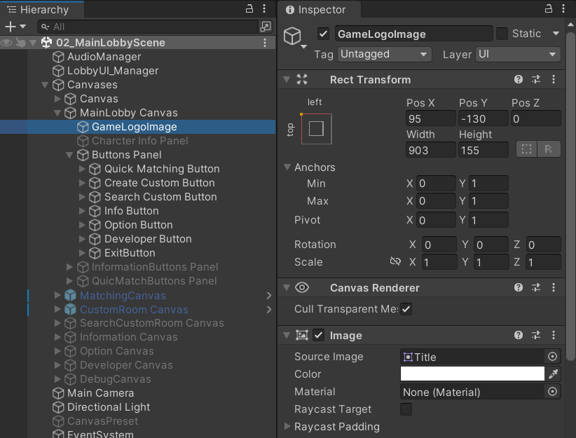
상호작용이 없는 UI일 경우
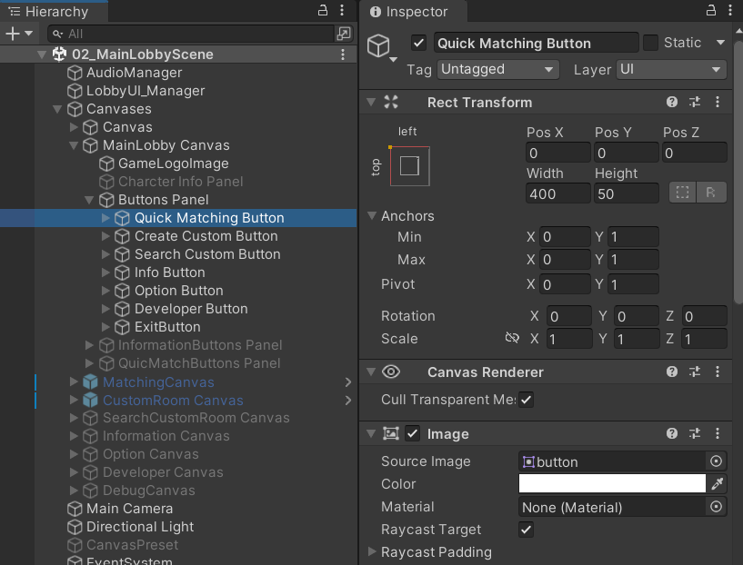
상호작용이 있는 UI일 경우
Canvas 카메라 설정
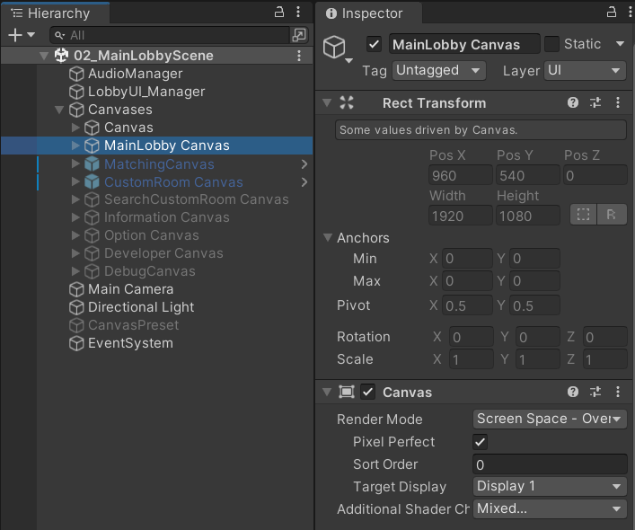
3
Object 상호작용 시스템
개발 의도. 플레이어와 다른 오브젝트가 상호작용할 수 있도록 개발했습니다.
- 오브젝트 앞에는 Trigger용 Collider, 플레이어 전면에는 Interactor가 존재 — 둘이 Trigger되면 상호작용 가능 여부를 판단
- Interactor가 IInteractor를 찾으면
TryInteract()호출 - InteractionPromptUI가 상호작용 가능 시 UI와 외곽선을 표시해 플레이어에게 알림 (진행 중 이펙트/UI, 종료·불가 시 표시 해제)
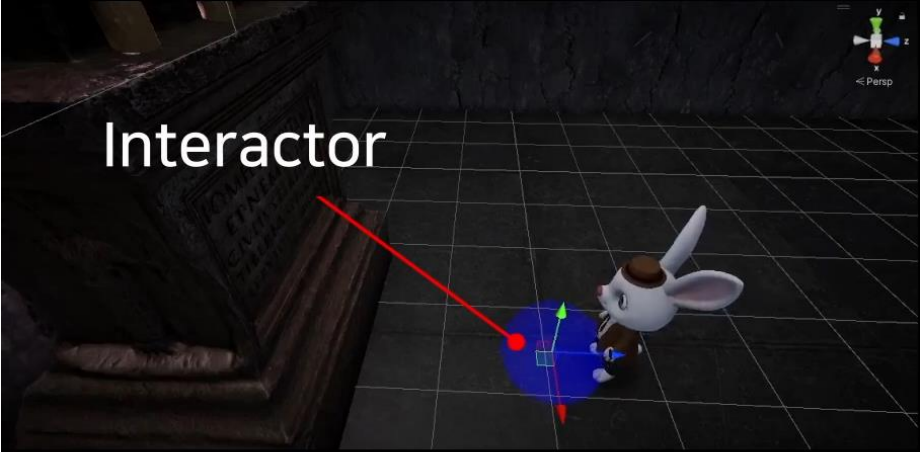
플레이어 앞에 존재하는 Interactor
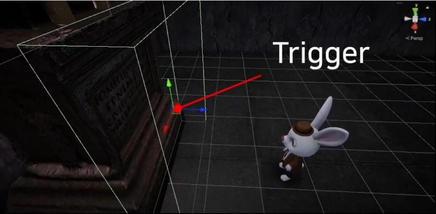
오브젝트 근처에 존재하는 Collider
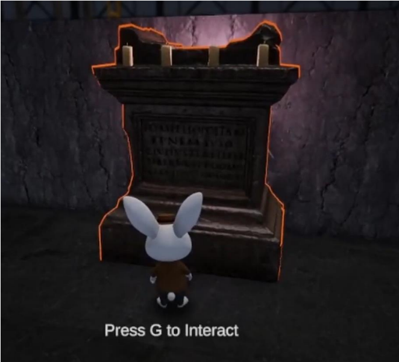
상호작용이 가능한 오브젝트의 모습
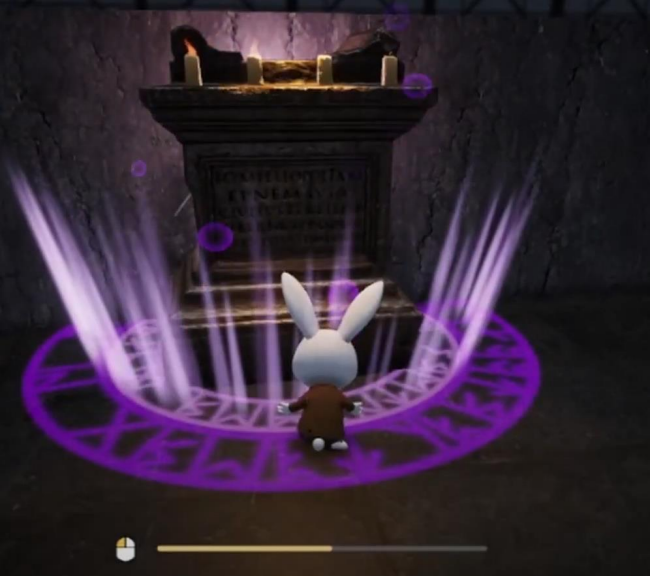
상호작용 시스템을 작동 중인 모습
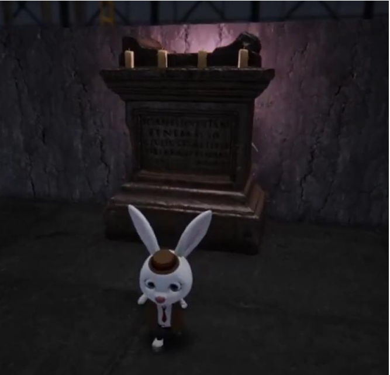
상호작용 시스템을 작동할 수 없을 때의 모습
Class Diagram
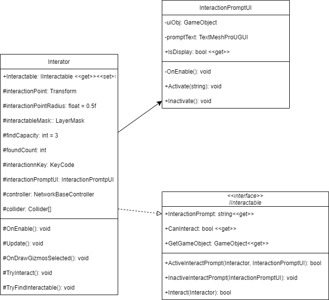
4
Casting 시스템
개발 의도. 대부분의 상호작용이 캐스팅(게이지 충전) 후 작동하기 때문에 개발했습니다.
- 캐스팅 타입 — Auto(한 번 누르면 끝까지 증가) / Manual(누르고 있는 동안만 증가)
- 저장 방식 — Volatile(데이터 유지) / Non-Volatile(데이터 미유지)
- Cast / CastFuncSet / CastingSystem 구조로 타입별 저장 방식과 실행 함수 조합을 분리
Class Diagram
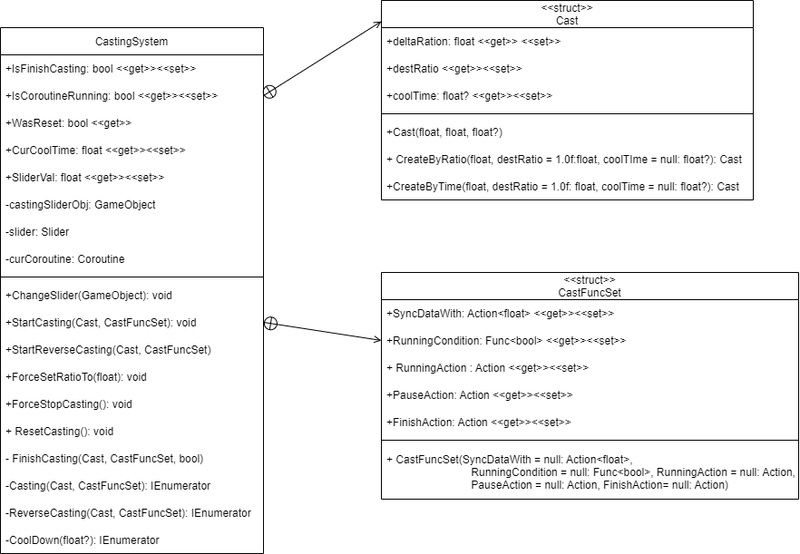